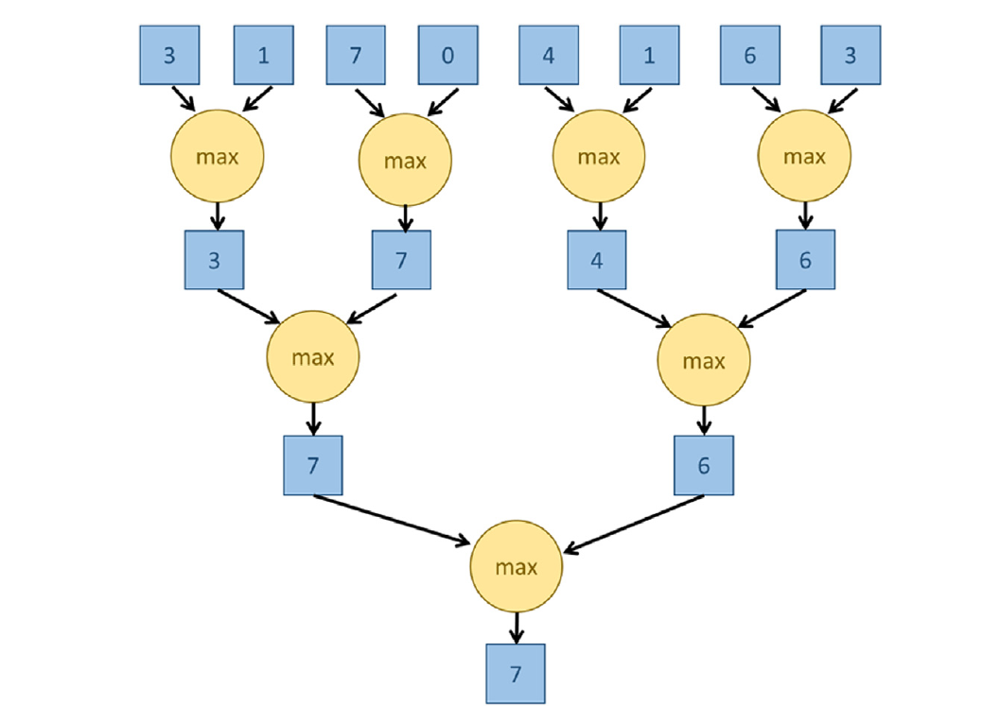
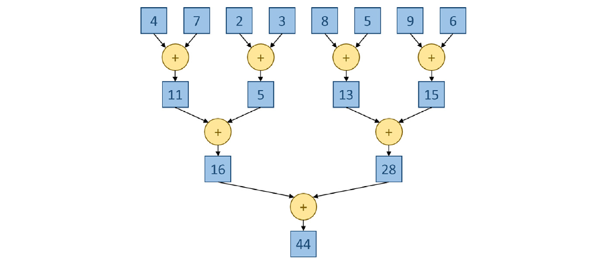
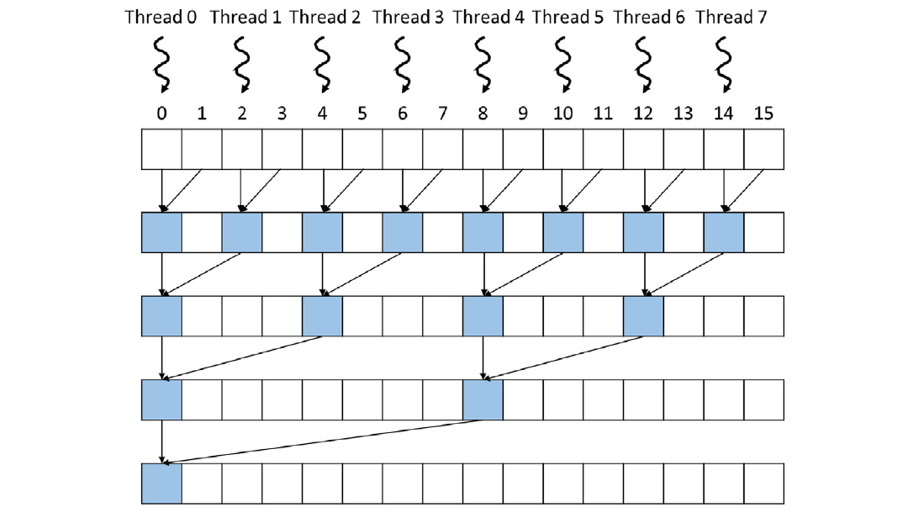
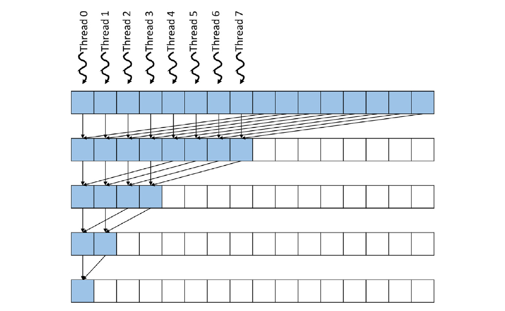
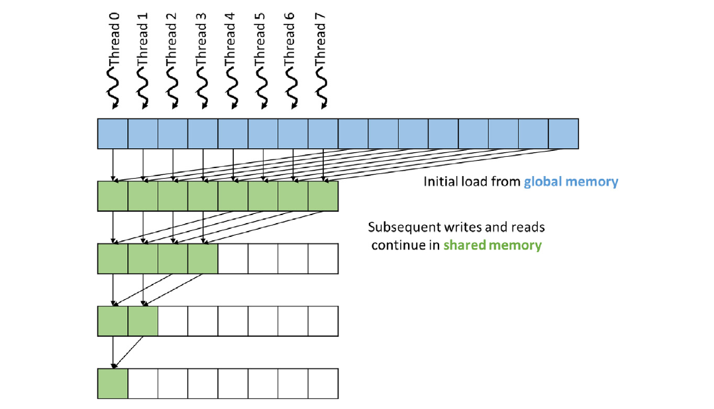
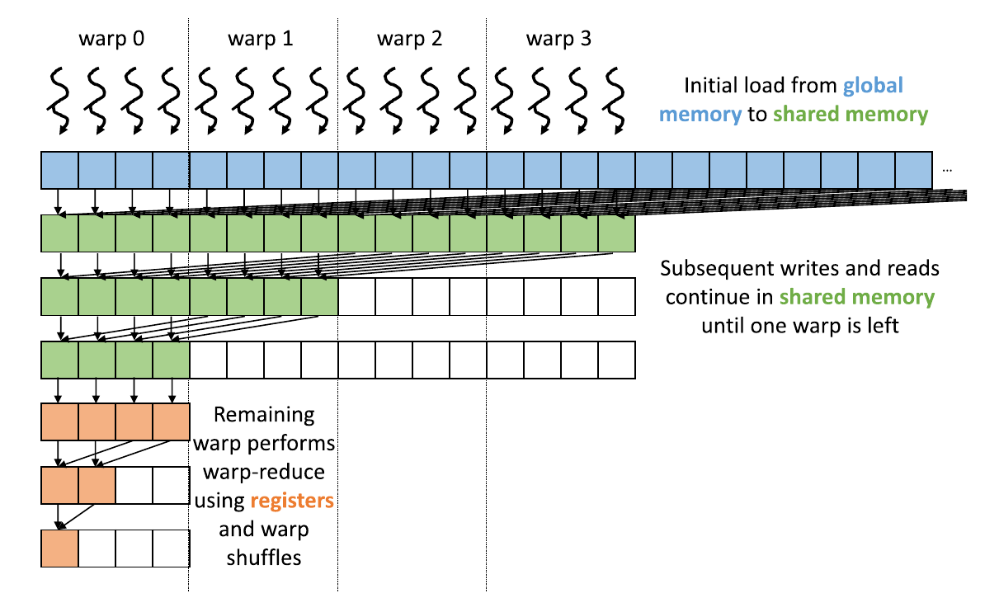
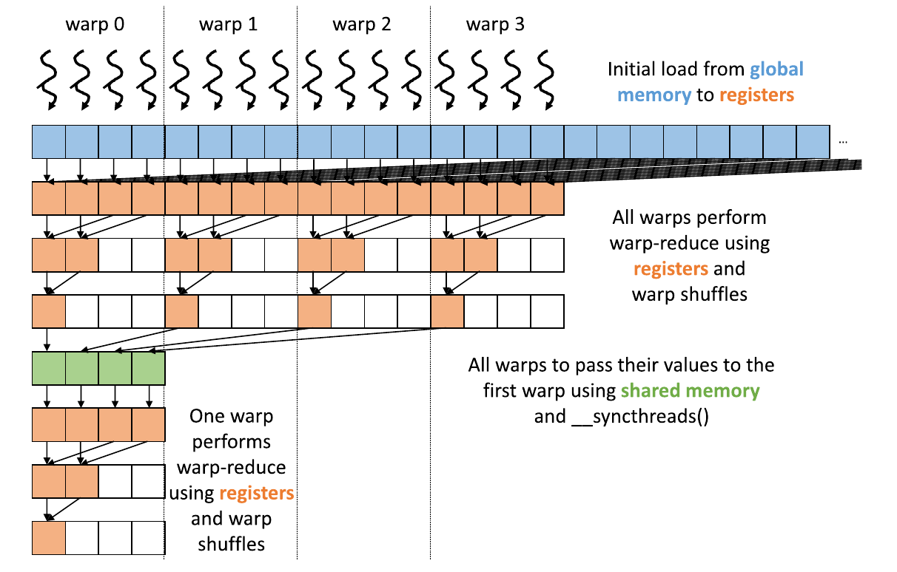
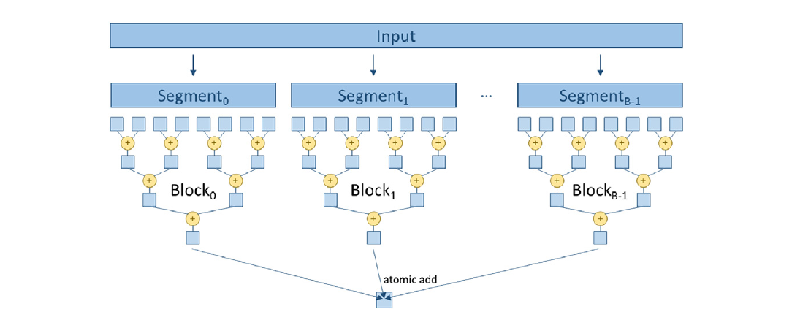
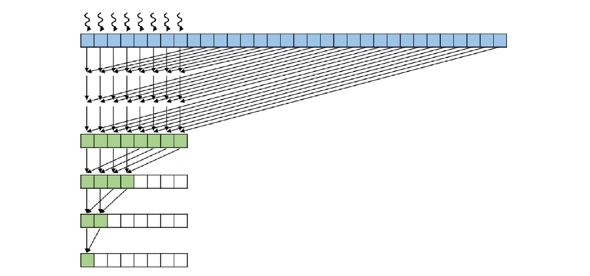
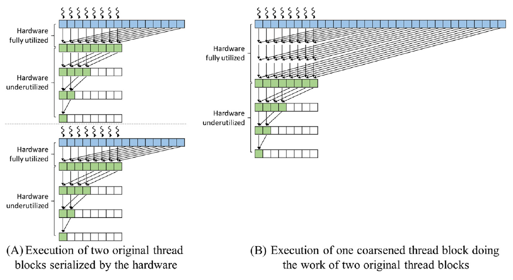

规约¶
学习目标¶
- 理解并行规约算法
- 通过减少分歧和全局内存访问优化规约算法
1. 什么是规约算法¶
规约算法（Reduction Algorithm）是一种将复杂问题或数据集合“规约”（缩小、简化或转换）为更小尺度、更低维度或标准形式的算法思想与计算模式。
在并行计算（如 CUDA、MPI、OpenMP）或分布式计算中，规约是一种经典的 聚合操作（Aggregation Operation）。它将一个包含大量元素的数组或集合，通过某种具有结合律（且通常交换律）的二元运算符，最终汇总合并为单个值或较小的数组。
核心逻辑： 给定包含 n 个元素的集合 A = \{a_1, a_2, \dots, a_n\} 和一个二元运算符 \oplus（如 +、\times、\max、\min），求：
常见规约操作：
- Sum Reduction（求和规约）： 累加所有元素求和。
- Max / Min Reduction（最值规约）： 查找集合中的最大值或最小值。
- Bitwise / Logical Reduction（按位/逻辑规约）： 对全集做
AND、OR或XOR运算。
2. 串行算法¶
2.1 通用算法¶
如果运算符具有明确定义的单位值，就可以基于二元运算符定义一组项的 规约。例如，浮点加法运算符具有单位值 0.0；也就是说，任何浮点值 v 和值 0.0 的加法结果是 v 本身。因此，可以基于加法运算符为一组浮点数定义 规约，该运算符产生集合中所有浮点数的总和。例如，对于集合 {7.0, 2.1, 5.3, 9.0, 11.2}，总和规约将产生 7.0+2.1+5.3+9.0+11.2 = 34.6。
通过顺序遍历数组的每个元素，可以执行 规约。下面是在 C 中的顺序总和规约代码。
sum = 0.0f;
for(i = 0; i < N; ++i) {
sum += input[i];
}
该代码将结果变量 sum 初始化为单位值 0.0。然后，它使用 for 循环来迭代保存值集合的输入数组。在第 i 次迭代期间，代码对 sum 的当前值和输入数组的第 i 个元素执行加法运算。在我们的示例中，在第 0 次迭代之后，sum 变量包含 0.0+7.0 = 7.0。在第 1 次迭代之后，sum 变量包含 7.0+2.1 = 9.1。因此，每次迭代之后，输入数组的另一个值将被添加（累积）到 sum 变量中。在第 5 次迭代之后，sum 变量包含 34.6，这是规约结果。
可以为许多其他运算符定义规约。可以为浮点乘法运算符定义一个乘积 规约，其单位值为 1.0。一组浮点数的乘积规约是所有这些数的乘积。可以为最小（min）比较运算符定义一个最小（min）规约，该运算符返回两个输入中较小的值。对于实数，最小运算符的单位值为正无穷大。可以为最大（max）比较运算符定义一个最大（max）规约，该运算符返回两个输入中较大的值。对于实数，最大运算符的单位值为负无穷大。
acc = IDENTITY;
for(i = 0; i < N; ++i) {
acc = Operator(acc, input[i]);
}
上面的代码是规约的一般形式，该形式被定义为接受两个输入并返回一个值的函数。在 for 循环的迭代期间访问元素时，所采取的操作取决于正在执行的规约类型。例如，对于最大（max）规约，Operator 函数执行两个输入之间的比较，并返回两者中的较大值。对于最小（min）规约，operator 函数比较两个输入的值，并返回较小的值。当 for 循环访问所有元素时，顺序算法结束。对于一组 N 个元素，for 循环迭代 N 次，并在循环退出时生成 规约结果。
2.2 单位元的作用¶
前面的算法依赖运算存在 单位元，如果某个自定义的运算没有单位元呢？
2.2.1. 数学与算子层面：只要集合非空，就可以规约¶
对于一个二元运算 \oplus 和一个 非空 元素序列 [a_1, a_2, \dots, a_n]（n \ge 1）：
- 顺序规约（折叠 / Fold）：可以直接从第一个元素开始逐步合并：
这完全不需要单位元 e。
2.2.2 典型的“没有天然单位元”的规约例子¶
- 求最大值 \max / 求最小值 \min：在实数域 \mathbb{R} 上没有有限的单位元（\max(x, e) = x 要求 e = -\infty，这不在普通有限浮点数集合内）。对非空数组求最大值完全合法；若数组为空，则数学上没有最大值。
- 字符串拼接（如无分隔符拼接的严格意义或某些非幺半群运算）、矩阵乘法以外的特定归并、自定义二元合并函数：很多业务或算法里的
reduce(op, non_empty_list)只需要一个二元函数op(acc, x)，并没有要求op存在单位元。
2.2.3 工程与并行计算（如 GPU 规约）层面：为什么总强调“单位元”？¶
在 GPU / 并行规约（比如 CUDA 里的 warp / block reduction）中，没有单位元的代码实现有两个现实痛点：
-
线程数 / 分块大小常大于实际数据长度（Padding 问题）： 比如一个 block 有 256 个线程，但尾部只剩 100 个有效元素。如果把空闲线程槽位填上单位元 e，就不会改变最终规约结果：
- 加法填
0.0 - 乘法填
1.0 - 逻辑与填
true、逻辑或填false - 浮点数求最大（在 IEEE 754 中）常填
-INFINITY（或首个有效元素）
- 加法填
-
输入为空时的统一接口： 库函数希望在
N == 0时也有一个确定类型的返回值（例如sum([]) == 0.0），那么也需要单位元。
2.2.4. 没有单位元时，工程上通常怎么处理？¶
如果某个规约算子确实没有单位元，常见做法有三种：
- 要求输入非空：直接以第一个元素作为初始累加器（
acc = x[0]），从x[1]开始归约；若输入为空则报错或返回空值。 - 引入“无值/未初始化”状态（如
Option/ 标记位）：规约状态不仅存当前值，还存一个has_value标志，第一次遇到有效元素时直接赋值，之后再调用二元算子合并。 - 借助外部扩展值充当“有效单位元”：例如求
max时在扩展域 \mathbb{R} \cup \{-\infty\} 中把 -\infty 当作单位元使用（注意在 IEEE 754 浮点下还要留意NaN的传播规则）。
总结来说：单位元是“空输入”和“并行边界填充”的便利条件，不是“非空集合做规约”的必要条件。 只要集合非空且二元运算在当前上下文中有明确定义，没有单位元一样可以规约。
3. 并行规约树¶
3.1 基本概念¶
并行规约的基本概念如下图所示，在竖直方向上时间向下推移，线程在每个时间步骤中的并行执行在水平方向上显示出来。

在第一轮（时间步骤）中，对原始元素的四对进行了四次 max 操作。这四个操作产生了部分规约结果：来自四对原始元素的四个较大值。在第二个时间步骤中，对部分规约结果的两对进行了两次 max 操作，并产生了两个更接近最终规约结果的部分结果。这两个部分结果分别是第一组四个元素中的最大值和原始输入中第二组四个元素的最大值。在第三和最后的时间步骤中，执行一次 max 操作生成最终结果，即原始输入中的最大值 7。
正如我们所见，并行规约假定应用运算符到输入值的顺序无关紧要。在 max规约中，无论应用运算符到输入值的顺序如何，结果都将是相同的。如果运算符是结合的，这种性质在数学上是保证的。如果运算符 ⊕ 是结合的，则（a ⊕ b）⊕ c = a ⊕（b ⊕ c）。例如，整数加法是结合的 ((1+2)+3 = 1+(2+3) = 6)，而整数减法不是结合的 ((1-2)-2) ≠ (1-(2-2))。也就是说，如果运算符是结合的，可以在涉及运算符的表达式的任意位置插入括号，结果都是相同的。通过这种等价关系，可以将任何运算符应用顺序转换为任何其他顺序，同时保持结果的等价性。严格来说，浮点加法不是结合的，因为引入括号的不同方式可能会产生舍入结果。然而，大多数应用程序接受浮点运算结果如果它们彼此之间的差异在可容忍范围内，则视为相同。这样的定义允许开发人员和编译器编写者将浮点加法视为结合运算符。
并行规约算法要求运算符是结合的。我们可以将规约视为操作列表。串行算法和并行算法操作顺序的差异只是在同一个列表的不同位置插入括号。对于串行算法，括号是：
((((((3 max 1) max 7) max 0) max 4) max 1) max 6) max 3
而并行算法的括号是：
((3 max 1) max (7 max 0)) max ((4 max 1) max (6 max 3))
我们下面还将在应用一种优化，不仅重新排列应用运算符的顺序，还重新排列操作数的顺序。要重新排列操作数的顺序，此优化进一步要求运算符是可交换的。如果 a ⊕ b = b ⊕ a，则运算符 ⊕ 是可交换的。也就是说，可以在表达式中重新排列操作数的位置，结果都是相同的。请注意，max 运算符也是可交换的，许多其他运算符如 min、sum 和 product 也是可交换的。显然，并非所有运算符都是可交换的。例如，加法是可交换的 (1+2 = 2+1)，而整数减法不是 (1-2 ≠ 2-1)。
这种并行规约模式被称为规约树，因为它看起来像一棵树，其叶子是原始输入元素，根节点是最终结果。不要把术语规约树与树数据结构混淆，在树数据结构中，节点要么显式与指针链接，要么隐式与分配的位置链接。在规约树中，边是概念上的，反映了从一个时间步骤中执行的操作到下一个时间步骤中执行的操作的信息流。
并行算法在执行时间上明显快于顺序代码。在上面的示例中，顺序代码中的 for 循环迭代八次，或者说花费八个时间步骤来访问所有输入元素并生成最终结果。另一方面，在图 10.3 中的并行操作中，并行规约树方法仅需要三个时间步骤：第一个时间步骤中进行四次 max 操作，第二个时间步骤中进行两次操作，第三个时间步骤中进行一次操作。这是时间步骤数量减少了 5/8 即 62.5%，或者说加速了 8/3 即 2.67 倍。当然，并行方法也有成本：必须有足够的硬件比较器来在同一时间步骤中执行最多四次 max 操作。对于 N 个输入值，规约树在第一轮中执行 1/2 N 次操作，在第二轮中执行 1/4 N 次操作，依此类推。因此，执行的总操作数由几何级数 1/2 N + 1/4 N + 1/8 N + ... + 1/N N 确定，这与顺序算法类似。
就时间步骤而言，规约树需要 \log_2 N 步来完成 N 个输入值的规约过程。因此，它可以在只需十个步骤的情况下将 N = 1024 个输入值减少为一个结果，前提是有足够的执行资源。在第一步，我们需要 1/2 N = 512 个执行资源！请注意，随着时间步骤的推进，所需资源数量迅速减少。在最后一个时间步骤中，我们只需要一个执行资源。每个时间步骤的并行性水平与所需的执行单元数量相同。我们关心的是所有时间步骤的平均并行性。平均并行性是执行的总操作数除以时间步骤的数量，即 (N - 1) / log_2 N。对于 N = 1024，在十个时间步骤中的平均并行性为 102.3，而峰值并行性为 512（在第一个时间步骤中）。

上图展示了一个包含八个输入值的总和规约树示例。完成这种规约需要 log_2 8 = 3 个时间步骤，最多使用四个加法器。
3.2 并行规约树的计算¶
假设 N 是 2 的整数次幂（即 N = 2^k，使得序列最后一项中的分母能恰好为 N）。
我们可以把系数 N 提出来：
3.2.1 计算等比数列之和¶
括号内的部分是一个首项 a_1 = \frac{1}{2}、公比 q = \frac{1}{2} 的有限等比数列：
根据有限等比数列求和公式 S_k = \frac{a_1 (1 - q^k)}{1 - q}：
3.2.2 代回求和¶
将括号内的结果代回原式：
这个结果和串行规约完全相同！
4. 简单的规约核函数¶
4.1 限制大小的原因¶
由于规约树需要所有线程之间的协作，而整个网格无法实现这种协作，因此我们将从实现一个在单个块内执行总和规约树的核函数开始。也就是说，对于一个包含 N 个元素的输入数组，我们将调用这个简单的核函数并启动一个由 1/2 N 个线程组成的块的网格。由于一个块最多可以有 1024 个线程，我们可以处理最多 2048 个输入元素。我们将在后面消除这种限制。在第一个时间步骤中，所有的 1/2N 个线程将参与，每个线程将添加两个元素来生成 1/2N 个部分和。在下一个时间步骤中，一半的线程将退出，只剩下 1/4N 个线程继续参与生成 1/4N 个部分和。这个过程将持续到最后一个时间步骤，在这个时间步骤中，只剩下一个线程将产生总和。
4.2 SimpleSumReductionKernel代码¶
__global__ void SimpleSumReductionKernel(float *input, float *output)
{
unsigned int i = 2 * threadIdx.x;
for (unsigned int stride = 1; stride <= blockDim.x; stride *= 2)
{
if (threadIdx.x % stride == 0)
{
input[i] += input[i + stride];
}
__syncthreads();
}
if (threadIdx.x == 0)
{
*output = input[0];
}
}
4.3 代码解释¶

上图展示了由该代码实现的规约树的执行过程。
请注意，在图中，时间从上到下逐步进行。我们假设输入数组位于全局内存中，并且在调用核函数时作为参数传递了一个指向数组的指针。每个线程被分配到一个数据位置，即 2 * threadIdx.x。也就是说，线程被分配到输入数组中的偶数位置：线程 0 被分配到 input[0]，线程 1 被分配到 input[2]，线程 2 被分配到 input[4]，依此类推。每个线程将成为分配给它的位置的“所有者”，并且将是唯一写入该位置的线程。核函数的设计遵循“所有者计算”方法，即每个数据位置都由唯一的线程拥有，并且只能由该所有者线程更新。
图的顶行显示了线程分配给输入数组位置的情况，随后的每一行展示了在每个时间步骤中对输入数组位置的写操作，即for 循环的迭代。图中标记为蓝色的位置表示内核在 for 循环的每次迭代中要覆写的位置。例如，在第一次迭代结束时，偶数索引的位置被原始元素对（0-1、2-3、4-5等）的部分和覆写。在第二次迭代结束时，索引为 4 的倍数的位置被相邻四个原始元素（0-3、4-7等）的部分和覆写。
代码里使用一个步幅(stride)变量使得线程可以找到合适的部分和以累加到其所属位置。步幅变量在初始化时为 1。随着每次迭代，步幅变量的值翻倍，因此步幅变量的值为 1、2、4、8等，直到它大于 blockIdx.x，即块中的总线程数。如上图所示，在每次迭代中的每个活跃线程使用步幅变量将距离为步幅的输入数组元素添加到其所属位置。例如，在第一次迭代中，线程 0 使用步幅值 1 将 input[1] 添加到其所属位置 input[0]。这将 input[0] 更新为输入数组的第一对原始值 input[0] 和 input[1] 的部分和。在第二次迭代中，线程 0 使用步幅值 2 将 input[2] 添加到 input[0]。此时，input[2] 包含输入数组 input[2] 和 input[3] 的和，而 input[0] 包含输入数组的前两个元素的和。因此，第二次迭代后，input[0] 包含输入数组前四个元素的和。在最后一次迭代后，input[0] 包含输入数组的所有原始元素的和，也即求和归约的结果。这个值由线程 0 作为最终输出写入。
现在我们转向if 语句（第5行）。if 语句的条件用于选择每次迭代中的活跃线程。在第 n 次迭代中，线程索引（threadIdx.x）值为 2^n 的倍数的线程执行加法。条件为 threadIdx.x % stride == 0，检查线程索引值是否是步幅变量的倍数。回想一下，步幅的值通过迭代翻倍，因此通过迭代步幅的值为 1、2、4、8等，或者对于第 n 次迭代为 2^n。因此，条件实际上测试线程索引值是否为 2^n 的倍数。所有线程执行相同的内核代码。满足 if 条件的线程是执行加法语句的活跃线程。未满足条件的线程是未活跃的线程，会跳过加法语句。随着迭代的进行，越来越少的线程保持活跃。在最后一次迭代中，只有线程 0 保持活跃并产生求和归约结果。
__syncthreads() 语句在 for 循环中确保在任何一个线程开始下一次迭代之前，由迭代计算的所有部分和都已经写入到它们在输入数组中的目标位置。这样，进入迭代的所有线程都能正确使用上一次迭代中生成的部分和。例如，第一次迭代后，偶数位置将被成对的部分和替换。__syncthreads() 语句确保了第一次迭代中所有这些部分和确实已经写入到输入数组的偶数位置，并且准备好供第二次迭代中的活跃线程使用。
5. 减少控制分歧¶
SimpleSumReductionKernel实现了并行规约树，并能生成预期的加法规约结果。但是它在每次迭代中对活跃线程与非活跃线程的管理方式导致了极高的 控制分支歧义（Control Divergence）。例如，在第 2 次迭代期间，只有 threadIdx.x 为偶数的线程才会执行加法语句。分支歧义会显著降低执行资源的利用效率（即用于生成有效结果的资源所占的百分比）。
一个 Warp 中的所有 32 个线程都会消耗执行资源，但其中只有一半是活跃的，从而浪费了一半的执行资源。这种由分支歧义导致的执行资源浪费会随着时间（迭代次数）推移而不断增加：
- 在第 3 次迭代中，一个 Warp 中仅有 1/4 的线程是活跃的，浪费了 3/4 的执行资源；
- 在第 6 次迭代中，一个 Warp 的 32 个线程中只有 1 个是活跃的，浪费了 \frac{31}{32} 的执行资源。
如果输入数组的大小大于 32，那么在第 6 次迭代之后，整个 Warp 都会变成非活跃状态。例如，对于大小为 256 的输入，系统会启动 128 个线程（即 4 个 Warp）。在第 1 至第 6 次迭代期间，这 4 个 Warp 都会表现出与前段所述相同的分支歧义模式；到了第 7 次迭代，Warp 1 和 Warp 3 会完全变为非活跃状态，因此不再产生控制分支歧义。另一方面，Warp 0 和 Warp 2 中各只有 1 个活跃线程，依然会表现出控制分支歧义并浪费 \frac{31}{32} 的执行资源；到了第 8 次迭代，仅有 Warp 0 保持活跃，同样表现出控制分支歧义并浪费 \frac{31}{32} 的执行资源。
通常情况下，对于大小为 N 的输入数组，执行资源利用效率可以计算为：所有迭代中活跃线程提交的总次数 与 消耗的总执行资源数 的比值。
消耗的总执行资源数与所有迭代中 活跃 Warp 的总数 成正比，因为只要一个 Warp 处于活跃状态，无论其内部有多少个活跃线程，都会消耗完整的执行资源。该数值可以按如下方式计算：
因为启动的线程数为 N/2，每 32 个线程构成一个 Warp，所以启动的总 Warp 数为 \frac{N/2}{32} = \frac{N}{64}。\frac{N}{64} 项乘以 6 是因为所有被启动的 Warp 在前 6 次迭代中均处于活跃状态。第 6 次迭代之后，在随后的每次迭代中活跃 Warp 的数量都会减半。括号中的表达式给出了所有迭代中活跃 Warp 的累加总数；第二项乘数 32 则反映了每个活跃 Warp 无论内部有多少活跃线程，都会按 32 个线程的标准消耗完整资源。
对于大小为 256 的输入数组（\frac{256}{64} = 4 个 Warp），消耗的执行资源总量为：
而由活跃线程提交的有效执行结果数，等于所有迭代中活跃线程数的总和：
括号中的各项给出了所有 \frac{N}{64} 个 Warp 在前 6 次迭代中的活跃线程数。从第 7 次迭代开始，活跃 Warp 的数量在每次迭代中减半，且每个活跃 Warp 中仅有 1 个活跃线程。对于大小为 256 的输入数组，提交的结果总数为：
这一结果非常直观，因为对 256 个值进行归约求和，所需的加法总操作数恰好就是 255 次。
将上述两个结果结合起来，我们可以计算出输入数组大小为 256 时的执行资源利用效率为：
这一比例表明，并行执行资源并没有充分发挥出加速该计算过程的全部潜力。平均而言，所消耗的资源中只有大约 30% 真正贡献给了加法规约结果——换句话说，我们只利用了硬件加速潜力的 30%。
6. 改进后的算法¶
6.1 思路¶
通过前面的分析，我们可以看到在线程束之间和随时间推移存在广泛的控制分歧。我们需要一种更好的方法来分配线程到输入数组位置以减少控制分歧并提高资源利用效率。之前算法的问题在于部分和位置之间的距离逐渐增大，因此拥有这些位置的活跃线程在时间推移中也逐渐远离彼此。这种活跃线程之间的距离增加导致了控制分歧水平的增加。
有一种更好的分配策略可以显著减少控制分歧。这个想法是，我们应该安排线程及其拥有的位置，使它们随着时间推移保持彼此接近。换句话说，我们希望随着时间的推移，步长值减小而不是增加。对于一个包含 16 个元素的输入数组，修订后的分配策略如下图所示。

在这里，我们将线程分配给前半部分位置。在第一次迭代期间，每个线程跨越所有(活跃)线程，并将一个输入元素添加到其拥有位置。在我们的例子中，线程 0 将input[8] 添加到其拥有位置 input[0]，线程 1 将input[9] 添加到其拥有位置 input[1]，依此类推。在每个后续迭代期间，一半的活跃线程将退出，所有剩余的活跃线程将添加一个距离其拥有位置的活跃线程数的输入元素。在我们的例子中，第三次迭代期间仍然有两个剩余的活跃线程：线程 0 将input[2] 添加到其拥有位置 input[0]，线程 1 将input[3] 添加到其拥有位置 input[1]。请注意，如果我们将两种方法进行比较，实际上是对列表中的操作数进行重新排序，而不仅仅是以不同的方式插入括号。为了使结果在这种重新排序中始终保持一致，操作必须是 可交换的，同时也必须是可结合的。
6.2 ConvergentSumReductionKernel¶
__global__ void ConvergentSumReductionKernel(float *input, float *output)
{
unsigned int i = threadIdx.x;
for (unsigned int stride = blockDim.x; stride >= 1; stride /= 2)
{
if (threadIdx.x < stride)
{
input[i] += input[i + stride];
}
__syncthreads();
}
if (threadIdx.x == 0)
{
*output = input[0];
}
}
6.3 改进分析¶
ConvergentSumReductionKernel与SimpleSumReductionKernel存在几处微小但极为关键的区别：
- 归约位置的计算（所有者位置）：所有者位置变量
i被直接设为threadIdx.x，而不是2 * threadIdx.x。因此，所有相邻线程对应的数据位置现在都是彼此相邻的。 - 跨度（stride）的初始化与更新：
stride的初始值被设置为blockDim.x，并在每轮循环中折半，直至减小到 1。 - 活跃线程的筛选条件：在每次迭代中，仅有线程索引小于当前
stride值的线程会保持活跃。
通过这些修改，Kernel 不再是在第一轮加法中累加相邻元素，而是去累加相距半个区块（Section）距离的元素——此时区块大小始终是剩余活跃线程数的两倍。在第一轮归约中相加的所有数据对，彼此相距 blockDim.x 个元素。第一轮迭代结束后，所有的成对累加和都会被存储在输入数组的前半部分（。最后，循环在进入下一次迭代前将 stride 除以 2。因此在第二次迭代中，stride 的值变为 blockDim.x 的一半；也就是说，剩余的活跃线程在第二次迭代中会累加相距四分之一区块距离的元素。
ConvergentSumReductionKernel 在循环内部依然保留了一个 if 条件语句。在每次迭代中，真正执行加法操作的线程数量与SimpleSumReductionKernel是完全相同的。那么，为什么这两个 Kernel 在控制分支歧义上会有如此巨大的差异呢？
答案取决于 执行加法操作的线程 与 不执行加法的线程 在 Warp 内部的相对位置。
我们以包含 256 个元素的输入数组为例：
- 第 1 次迭代：所有线程都处于活跃状态，因此不存在控制分支歧义。
- 第 2 次迭代：
threadIdx.x为 0 到 63 的线程执行加法语句（活跃），而线程 64 到 127 则不执行（非活跃）。这轮的成对累加和被保存在第 0 到 63 号元素中。由于 Warp 是由连续 32 个threadIdx.x的线程构成的： - Warp 0 和 Warp 1 中的 所有线程 都会执行加法语句；
- Warp 2 和 Warp 3 中的 所有线程 则全部变为非活跃状态。
因为同一个 Warp 中的所有线程都走向了相同的执行路径，所以完全没有产生控制分支歧义！
然而，ConvergentSumReductionKernel并未完全消除由 if 语句引起的分支歧义。我们可以验证：对于 256 个元素的示例，从第 4 次迭代开始，执行加法操作的线程数量将降至 32 以下。也就是说，最后 5 次迭代中分别只有 16、8、4、2 和 1 个线程在执行加法。这意味着在这些最后的迭代中，Kernel 执行依然存在分支歧义。
不过，发生分支歧义的循环迭代次数从 10 次减少到了 5 次。我们可以计算出所消耗的总执行资源数：
- 括号部分：反映了在随后的每次迭代中，半数的 Warp 会完全变成非活跃状态，不再消耗任何执行资源。这种递减一直持续到只剩下 1 个完整的活跃 Warp。
- 最后一项 (5 \times 1)：反映了在最后 5 次迭代中，只剩下 1 个活跃 Warp，尽管其中只有一部分线程真正活跃，但其全部 32 个线程依然会消耗完整的执行资源。
因此，括号中的求和给出了所有迭代中 Warp 执行的总次数，再乘以 32 就得到了消耗的执行资源总量。
对于我们 256 个元素的示例，消耗的执行资源为：
这几乎是SimpleSumReductionKernel消耗资源数（736）的一半。由于在每次迭代中活跃线程的总数相比此前并未发生改变，因此新 Kernel 的计算资源利用效率提升为：
这几乎是改进前效率（30%）的两倍。
值得注意的是，由于 Warp 是在执行资源有限的 SM（流多处理器）中轮流调度执行的，因此 资源消耗的减少也将直接缩短总体的执行时间 。
这两个Kernel之间的差异虽然微小，但对性能的影响却是极其显著的。
7. 减少内存访问合并分歧¶
7.1 SimpleSumReductionKernel的内存访问次数¶
SimpleSumReductionKernel存在另一个性能问题：内存访问分歧（Memory Access Divergence）。在每个 Warp 内部实现内存合并访问（Memory Coalescing）至关重要。也就是说，当一个 Warp 中的相邻线程访问全局内存（Global Memory）时，应当访问相邻的内存位置。在SimpleSumReductionKernel，相邻线程并未访问相邻位置。在每次迭代中，每个线程会执行两次全局内存读取和一次全局内存写入：第一次读取来自于其自身负责（Owned）的位置，第二次读取来自于距离其自身位置间隔 stride 的位置，而写入则是写回其自身位置。由于相邻线程所负责的位置并非相邻内存地址，因此相邻线程发起的内存访问无法实现完全合并。在每次迭代中，一个 Warp 共同访问的内存位置之间都相隔着 stride 的距离。
例如，如上图所示，在第一次迭代时，当一个 Warp 中的所有线程进行第一次读取时，它们访问的内存位置彼此相隔 2 个元素。结果，触发的全局内存事务（Memory Transactions）数量达到了合并访问情况下的两倍，且返回的数据中有一半不会被线程使用。第二次读取和写入操作同样存在这一现象。到了第二次迭代，每隔一个线程就会退出活跃状态，此时 Warp 共同访问的内存位置彼此相隔 4 个元素。这导致触发的全局内存事务数量达到了合并访问的 4 倍，返回的数据中仅有 1/4 被真正使用。随着迭代的推进和 stride 的增大，这种内存访问的低效性会持续加剧。
这种状况会一直持续，直到每个 Warp 中只剩下一个活跃线程为止。只有当 Warp 中仅剩 1 个活跃线程时，该 Warp 才会仅发起 1 次全局内存请求。因此，全局内存请求的总数可以计算为：
- 第一项（\frac{N}{64} \times 5 \times 2）：对应前 5 次迭代。在这 5 次迭代中，所有 \frac{N}{64} 个 Warp 都包含 2 个或更多活跃线程，其分散/非合并的内存访问每次会触发 2 次全局内存请求。
- 后续各项：对应最后的几次迭代。此时每个 Warp 仅有 1 个活跃线程，只触发 1 次全局内存请求，且在随后的每次迭代中活跃 Warp 数量折半。
- 乘数 3：对应每个活跃线程在每轮迭代中所执行的 2 次读取和 1 次写入。
对于 256 个元素的示例，该 Kernel 执行的全局内存请求总数为：
7.2 ConvergentSumReductionKernel的内存访问次数¶
在优化后的 Kernel 中：
- 内存完全合并（Coalesced Access）：相邻线程访问连续内存地址。由于一个 Warp（32 个线程）的连续内存访问可以完全合并为 1 次全局内存 Request，因此 只要 Warp 内有活跃线程，该 Warp 每一轮读/写操作仅触发 1 次 Request。
- 每次迭代的操作次数：每轮迭代中，每个活跃 Warp 执行 2 次 Read + 1 次 Write，共计 3 次内存 Request（因子为 3）。
假设数组大小 N = 256（启动 N/2 = 128 个线程，即 \frac{N}{64} = 4 个 Warp）：
- 前 3 次迭代（迭代 1 ~ 3，对应 stride = 128, 64, 32）：
- 迭代 1（stride=128）：128 个线程活跃 \rightarrow 4 个 Warp 全部活跃。
- 迭代 2（stride=64）：64 个线程活跃 \rightarrow 前 2 个 Warp（Warp 0, 1）完全活跃，后 2 个 Warp 完全不活跃（无内存访问）。
- 迭代 3（stride=32）：32 个线程活跃 \rightarrow 仅 1 个 Warp（Warp 0）完全活跃。
在此阶段（前 3 次迭代），活跃 Warp 数量在每轮迭代中 折半：
- 后 5 次迭代（迭代 4 ~ 8，对应 stride = 16, 8, 4, 2, 1）：
- 活跃线程数分别为 16, 8, 4, 2, 1（均小于 32）。
- 此时只剩下 1 个活跃 Warp（Warp 0），且该 Warp 在这 5 次迭代中一直保持活跃。
- 每次读写仍旧触发 1 次合并内存请求（因为总数据量不足一个 Transaction 粒度，仅需 1 次 Request 覆盖）。
在此阶段（后 5 次迭代），活跃 Warp 数为：
通用公式与具体数值计算
对于大小为 N 的数组（启动 \frac{N}{64} 个初始 Warp），全局内存请求总数的公式为：
说明：
- 方括号部分表示活跃 Warp 逐步折半直到剩 1 个 Warp 的阶段（包含 \log_2(N/64) + 1 次迭代）。
- 5 \times 1 表示最后 5 次迭代中，始终只有 1 个 Warp 在执行内存访问。
- 最后的 \times 3 对应每次迭代的 2 次 Read + 1 次 Write。
以 N = 256 为例的具体计算
对于 N = 256，初始 Warp 数为 \frac{256}{64} = 4：
8. 减少全局内存访问¶
ConvergentSumReductionKernel可以通过使用共享内存进一步改进。请注意，在每次迭代中，线程将部分求和结果值写入全局内存，并且这些值由相同的线程和下一次迭代中的其他线程重新读取。由于共享内存的延迟时间更短，带宽更高，我们可以通过将部分求和结果保留在共享内存中来进一步提高执行速度。这个想法如下图所示：

对应的代码是ShareMemorySumReductionKernel：
__global__ void ShareMemorySumReductionKernel(const float *input, float *output)
{
__shared__ float input_s[BLOCK_DIM];
unsigned int i = threadIdx.x;
input_s[i] = input[i] + input[i + blockDim.x];
for (unsigned int stride = blockDim.x / 2; stride >= 1; stride /= 2)
{
__syncthreads();
if (threadIdx.x < stride)
{
input_s[i] += input_s[i + stride];
}
}
if (threadIdx.x == 0)
{
*output = input_s[0];
}
}
其思想是让每个线程在将部分求和结果写入共享内存之前加载和相加两个原始元素。由于第一次迭代在循环外访问全局内存位置时已经完成，所以for循环从blockDim.x/2 开始，而不是blockDim.x。__syncthreads()移到循环的开头，以确保我们在共享内存访问和循环的第一次迭代之间同步。然后线程通过读取和写入共享内存进行剩余的迭代。最后，在内核的末尾，线程0将总和写入输出，保持与以前内核相同的行为。
使用ShareMemorySumReductionKernel，全局内存访问的次数减少到了加载输入数组原始内容和最后写入input[0]的初始次数。因此，对于N个元素的求和，全局内存访问次数仅为N+1。还要注意，ShareMemorySumReductionKernel的两次全局内存读取都是协调的。因此，在协调的情况下，全局内存请求只有(N/32)+1次。对于256个元素的示例，触发的全局内存请求总数将从36次减少到8+1 = 9次，改进了4倍。使用共享内存的另一个好处是，除了减少全局内存访问次数外，输入数组不会被修改。这个特性在需要在程序的其他部分进行某些其他计算时需要数组的原始值时非常有用。
9. 使用Warp级别原语（Warp-Level Primitives）降低同步开销¶
在前面的Kernel 中，当步长（stride）减小至 32 及以下时，在线程块（Thread Block）中仅剩下一个 Warp 处于活跃状态来执行规约树。CUDA 提供了多种 Warp 级别原语（Warp-Level Primitives），允许同一个 Warp 内的线程以不同于跨 Warp 线程的方式进行数据共享与相互同步。因此，当活跃线程数降低至 32 及以下时，我们可以通过使用 Warp 级别原语来减少访问共享内存（Shared Memory）以及调用 __syncthreads() 的开销，从而进一步优化规约 Kernel。在本节中，我们将介绍 CUDA 中可用的一些 Warp 级别原语，并展示如何利用它们对规约 Kernel 进行深度优化。
9.1 Warp级别原语¶
最简单的 Warp 级别原语是 __syncwarp()，其行为类似于 __syncthreads()，但作用域仅局限于 Warp 级别。__syncwarp() 可以确保 Warp 中的所有线程在其中任何一个线程继续执行之前，都已到达代码中调用该原语的位置。特别是当 Warp 中的线程发生分支歧义（Divergence）时，__syncwarp() 能确保它们重新收敛（Reconverge）。
另一类Warp 级别原语是 Warp 洗牌函数（Warp Shuffle Functions）。Warp 洗牌函数允许同一个 Warp 内的线程直接在各自的 寄存器 之间互相交换数据（或洗牌数据），而无需访问共享内存或调用 __syncthreads()。其中与规约 Kernel 最为相关的是 __shfl_down_sync 原语，它允许一个线程从另一个索引比自己大指定步长（stride）的线程中洗牌获取数据。
__shfl_down_sync 的具体参数如下：
T __shfl_down_sync(unsigned mask, T var, unsigned int delta);
mask：指示在执行洗牌（shuffle）指令时，Warp 中哪些线程处于活跃状态（掩码）。var：发送线程传递的值，该值将被洗牌传输给接收线程。delta：发送线程的索引比接收线程的索引高出的跨度值（步长）。- 返回值：对于接收线程，返回值是从发送线程洗牌传输过来的值。对于线程 i，如果线程 i 和线程 i + \text{delta} 在
mask中对应的位都已被置 1（活跃），则返回值即为线程 i + \text{delta} 的var值。
__shfl_down_sync 原语可用于实现 Warp 范围内的规约（Warp-wide Reduction），且完全无需访问共享内存或调用 __syncthreads()。
__shfl_down_sync 函数以及其他 Warp 级别原语还接受一个可选的附加参数，用于指定参与执行该原语的线程组宽度（Width）。默认情况下该宽度为 32，意味着 Warp 中的所有 32 个线程被视为单个协作组。然而，也可以指定更小的宽度将 Warp 划分为更小的协作组。例如，若指定宽度为 8，则 Warp 会被视为 4 个各自包含 8 个线程的小组，每组 8 个线程相互协作执行原语，且独立于 Warp 中的其他小组。
CUDA 中还提供了其他类型的 Warp 洗牌函数，适用于在同一个 Warp 内不同线程间进行数据交换的其他场景。这些函数包括 __shfl_sync、__shfl_up_sync 和 __shfl_xor_sync。关于其他 Warp 洗牌函数具体运作方式的细节，请参考《CUDA C++ Programming Guide》。
除了 Warp 洗牌函数外，其他类型的 Warp 级别原语还包括：
- Warp 投票函数（Warp Voting Functions）：用于检查 Warp 中哪些线程满足特定条件；
- Warp 匹配函数（Warp Match Functions）：用于检查 Warp 中哪些线程的某个参数具有相同的值；
- Warp 规约函数（Warp Reduce Functions）：用于对整型数值直接执行 Warp 范围的规约。
9.2 使用__shfl_down_sync优化Warp内的归并¶

上图展示了如何将这种 Warp 范围规约集成到块范围规约（Block-wide Reduction）中，以降低屏障同步（Barrier Synchronization）开销并减少对共享内存的访问。为简明起见，图中示意了一个由 4 个 Warp 组成、每个 Warp 包含 4 个线程的 Block。而在实际应用中，一个包含 1024 个线程的 Block 通常由 32 个 Warp 组成，每个 Warp 包含 32 个线程。
前几次迭代的执行方式与先前的实现类似：每个线程从共享内存加载两个元素，将它们相加，并将结果写回共享内存；每次迭代之间通过 __syncthreads() 进行 Block 级别的屏障同步。每轮迭代完成后，半数线程退出计算。然而，与先前实现不同的是，一旦剩余的线程缩减至单个 Warp，就 不再需要使用 __syncthreads() 和共享内存 。相反，该 Warp 中的线程直接将共享内存中的值加载到各自的寄存器中，并后续通过在寄存器之间洗牌传输数值来完成剩余规约树的迭代。
9.3 辅助函数¶
现在我们将注意力转向实现上图所述方法的代码。为了辅助 Warp 级别编程，我们首先定义两个设备辅助函数（Device Functions），分别用于获取线程在 Block 中的 Warp 索引以及在 Warp 中的线程索引。
为了获取线程在 Block 中的 Warp 索引，我们定义如下设备函数：
__device__ unsigned int warpIdx() { return threadIdx.x / WARP_SIZE; }
该函数将线程索引除以 Warp 大小（32），使得每 32 个连续的线程拥有相同的 Warp 索引。例如，线程 0 到 31 的 Warp 索引均为 0，线程 32 到 63 的 Warp 索引均为 1，以此类推。
为了获取线程在 Warp 中的索引（也称为 Lane 索引 / Lane ID），我们定义如下设备函数：
__device__ unsigned int laneIdx() { return threadIdx.x % WARP_SIZE; }
该函数对线程索引取 Warp 大小（32）的模，使得同一个 Warp 中的 32 个连续线程具有从 0 到 31 的 Lane 索引。例如，Block 中的线程 32 的 Lane 索引为 32 % 32 = 0（因为它是 Warp 1 中的第 1 个线程），线程 33 的 Lane 索引为 33 % 32 = 1（因为它是 Warp 1 中的第 2 个线程），以此类推。
9.4 warp_reduce函数¶
定义好这些设备辅助函数后，我们接着来实现 Warp 范围的规约。
__device__ __inline__ float warp_reduce(float val) {
float partialSum = val;
for(unsigned int stride = WARP_SIZE/2; stride > 0; stride /= 2) {
partialSum += __shfl_down_sync(0xffffffff, partialSum, stride);
}
return partialSum;
}
上面代码展示了一个设备函数 warp_reduce，它通过在寄存器间洗牌数据来执行 Warp 范围的规约操作。该函数旨在由 Warp 中的所有线程共同调用，每个线程提供一个变量 val 作为参数，代表其希望贡献给规约计算的值。
每个线程首先将其局部累加变量 partialSum 初始化为 val。随后执行一个规约循环，步长从 16 递减至 1）。初始步长设为 16 是因为一个 Warp 包含 32 个线程（即有 32 个值需要规约），所以在第一轮迭代中，前 16 个线程将累加来自后 16 个线程的值。在规约循环的每次迭代中，我们使用 __shfl_down_sync 以一种轻量级的方式在 Warp 内部交换数据并完成同步：
- 第 1 个参数（
0xffffffff）：是一个 32 位的掩码（Mask），其中所有位均置 1，表示该 Warp 中的所有 32 个线程都参与此次规约操作； - 第 2 个参数：指定每个发送线程将其包含
partialSum的寄存器值传递给接收线程； - 第 3 个参数：指定接收线程的索引比发送线程的索引低
stride个位置。
__shfl_down_sync 返回的值即为接收线程从发送线程处获取的数据。换句话说，对于 Warp 中的线程 i，__shfl_down_sync 将返回线程 i + \text{stride} 的 partialSum 值。该值随后被加到接收线程自身的局部累加和中。
循环执行完毕后，最终结果存储在 Warp 中第一个线程（Lane 0）的 partialSum 变量中。因此，该值会被返回给调用方，且约定 仅有第一个线程的返回值代表真正的规约结果。
9.4.1. 下标超过 32 会怎么样？（例如第 31 个线程：31 + 16 = 47）¶
结论：不会溢出，也不会报错，原语会直接返回线程自身的当前值，相当于加 0（如果自己处理）或无效数据。
根据 CUDA 官方规范，__shfl_down_sync(mask, var, delta) 的作用是从当前线程 lane_id 向后偏移 delta 的线程（即 lane_id + delta）处读取数据：
- 当目标索引
lane_id + delta >= 32（超过当前 Warp 的 32 个线程范围，或者超出了可选的width边界）时： - 原语行为：
__shfl_down_sync会直接 将调用者（即线程自身）的var值原样返回。
- 对于第 31 个线程（
delta = 16）： - 第 31 个线程执行
__shfl_down_sync(0xffffffff, partialSum, 16)时，目标索引为 31 + 16 = 47 \ge 32。 - 该函数直接返回第 31 个线程自身的
partialSum。 - 线程 31 执行
partialSum += partialSum（即自身翻倍）。
为什么不会越界访问其他 Warp？ Warp Shuffle 原语是在硬件层面限制在 单个 Warp 内部（32 个 Lane） 进行数据交换的，完全无法跨 Warp 读取数据。因此不存在越界访问下一个 Warp 寄存器的风险。
9.4.2. 后 16 个线程的结果是否有意义？¶
结论：没有意义（属于垃圾数据/无效计算），但这种“冗余计算”是故意设计的，比加 if 条件判断性能更高。
随着 stride 从 16 逐步降至 1：
- 线程 0（Lane 0）：依次累加了来自 Lane 16, 8, 4, 2, 1 的数据，最终正确汇总了全部 32 个线程的
val之和。 - 后 16 个线程（Lane 16~31）：由于它们的
lane_id + stride频繁超出 32 范围，会不断触发“返回自身”并累加，导致它们的partialSum最终变成无意义的垃圾值。
9.4.3 为什么不加 if (lane_id < stride) 来过滤后 16 个线程？¶
在 CPU 串行思维中，我们通常会写 if (lane_id < stride) 来避免后半部分线程做无用功。但在 GPU/CUDA Warp 架构下：
- 避免控制分支歧义（Branch Divergence）：
如果加上
if (lane_id < stride)，Warp 内部会产生分支歧义，SIMD 执行单元需要分别处理满足条件和不满足条件的线程，带来额外的指令发射和掩码切换开销。 - SIMT 硬件特质： 在同一个 Warp 内部，所有 32 个线程共享指令发射器。让后 16 个线程“陪跑”做一次无意义的加法指令，与让它们挂起不执行相比，消耗的硬件周期完全一致。
- 保持同步一致性：
所有线程无分支地共同执行
__shfl_down_sync，保证了 Warp 内部隐式同步的流畅性。
因此，代码最后明确约定：仅有 Lane 0（即 threadIdx.x == 0 或 laneIdx() == 0）返回的 partialSum 才是整个 Warp 规约的真正结果。后 16 个线程的脏数据在后续直接丢弃即可。
9.5 warpLevelSumReductionKernel¶
在使用 Warp 级别原语实现了 Warp 范围规约之后，我们就可以利用这个设备函数来优化规约 Kernel。下面是集成了 Warp 范围规约的 Kernel 代码：
__global__ void warpLevelSumReductionKernel(float* input, float* output) {
__shared__ float input_s[BLOCK_DIM];
unsigned int t = threadIdx.x;
input_s[t] = input[t] + input[t + BLOCK_DIM];
for (unsigned int stride = blockDim.x/2; stride >= WARP_SIZE; stride /= 2) {
__syncthreads();
if (threadIdx.x < stride) {
input_s[t] += input_s[t + stride];
}
}
__syncthreads();
if(warpIdx() == 0) {
float partialSum = input_s[t];
partialSum = warp_reduce(partialSum);
if (threadIdx.x == 0) {
*output = partialSum;
}
}
}
代码的前半部分与前面类似，唯一的区别在于循环在步长（stride）达到 Warp 大小（即 32）时便终止。从步长 32 递减至 1 的阶段，在线程块中仅有第一个 Warp（Warp 0）参与执行规约树。出于这个原因，代码限制仅有 Warp 索引计算为 0 的线程才会继续执行。剩余 Warp 中的每个线程首先将共享内存中对应其自身索引的元素加载到名为 partialSum 的寄存器中。接着，该 Warp 的线程共同调用图 10.13 中的 warp_reduce 函数，该函数将最终的和返回给 Warp 中的第一个线程（即 Block 的 0 号线程）。该线程随后将结果写入全局内存（Global Memory）的输出数组中。
通过这种方式，我们完全 消除了步长从 16 开始的各轮迭代中的共享内存访问与屏障同步（__syncthreads()）。
10. 使用两阶段 Warp 范围规约进一步降低同步开销¶
10.1 思路¶
warpLevelSumReductionKernel消除了规约树最后几次迭代中访问共享内存（Shared Memory）和屏障同步（Barrier Synchronization）的开销。然而，初始的几次迭代依然会产生这些开销。消除该开销的一种方法是在初始阶段也采用 Warp 范围的规约（Warp-wide Reductions）。在这种情况下，我们可以让线程块（Thread Block）中的每个 Warp 分别对输入的一个分段执行 Warp 范围规约，并将其局部和存入共享内存；随后，再由单个 Warp 执行一次 Warp 范围规约来汇总这些局部和。

上图展示了如何通过两阶段 Warp 范围规约来进一步降低屏障同步与共享内存访问的开销。在初始阶段，每个 Warp 加载其内部线程负责规约的元素，并执行 Warp 范围规约。在第一阶段 Warp 范围规约结束时，每个 Warp 的第一个线程（Lane 0）便拥有了分配给该 Warp 的所有元素的总和。这些线程将各自的求和结果写入共享内存，并使用 __syncthreads() 执行一次块级别的屏障同步。在此之后，第一个 Warp 读取这些写回的局部和，并通过另一次 Warp 范围规约将它们汇总为最终的总和。
10.2 TwoStageWarpLevelSumReductionKernel代码¶
__global__ void TwoStageWarpLevelSumReductionKernel(float* input, float* output) {
unsigned int t = threadIdx.x;
float partialSum = input[t] + input[t + BLOCK_DIM];
partialSum = warp_reduce(partialSum);
__shared__ float partialSums_s[BLOCK_DIM/WARP_SIZE];
if(laneIdx() == 0) {
partialSums_s[warpIdx()] = partialSum;
}
__syncthreads();
if(warpIdx() == 0) {
float partialSum = partialSums_s[t];
partialSum = warp_reduce(partialSum);
if (threadIdx.x == 0) {
*output = partialSum;
}
}
}
- 第一阶段 Warp 规约：每个线程首先加载分配给它的两个输入元素并将它们相加，将结果暂存到寄存器中。接着，同一个 Warp 内的线程共同调用
warp_reduce函数来执行 Warp 范围规约。在此过程中，线程块中的所有 Warp 都处于活跃状态，各自独立执行规约。 - 局部和写入共享内存：每个 Warp 中的第一个线程（即 Lane 索引为 0、持有该 Warp 局部和的线程）将该局部和写入共享内存中与该 Warp 对应的位置。随后执行屏障同步，以确保所有 Warp 均已完成局部和的写入。
- 第二阶段 Warp 规约：所有 Warp 完成写入后，代码的处理流程类似于前面的 Kernel。此时仅有第一个 Warp（Warp 0）中的线程继续执行。该 Warp 中的每个线程从共享内存中加载一个局部和，随后这些线程执行第二次 Warp 范围规约。
- 输出结果：最后，该 Warp 中的第一个线程（Block 的 0 号线程）将最终的求和结果写入全局内存。
10.3 分析¶
使用两阶段 Warp 范围规约实现的主要优势在于：它 同样消除了第一阶段中访问共享内存与屏障同步的开销。我们唯一需要访问共享内存并执行屏障同步的时机，仅发生在两个阶段交接过渡的时候。
然而，这种实现方式也存在一定的劣势。回顾warpLevelSumReductionKernel的实现，在第一阶段中，随着每轮迭代推进，半数的 Warp 会完全退出活跃状态，且内部不会产生分支歧义（Control Divergence）。而在使用两阶段的实现中，所有的 Warp 在整个第一阶段均保持活跃状态；但在每个 Warp 内部，并非所有线程在每次洗牌（Shuffle）操作中都在做有效计算，这意味着该实现承受了更多的控制分支歧义。因此，该实现实际上是 以增加控制分支歧义为代价，换取了共享内存访问与屏障同步开销的降低。
在实际应用中，这种权衡是完全值得的。因为一旦数据从全局内存加载完毕，规约 Kernel 剩余部分的性能主要受限于 指令延迟（Latency Bound）。消除共享内存访问和屏障同步有助于减少 Kernel 中的高延迟指令。另一方面，消除非活跃 Warp 虽然有效，但并不能为受限于延迟的 Kernel 带来实质性收益，因为通过消除分支歧义所节省的执行周期，大概率会被硬件停顿周期（Stall Cycles）所填补。
为什么在规约优化中，宁可承受一定的控制分支歧义（Control Divergence），也要极力消除共享内存（Shared Memory）访问与 __syncthreads() 屏障同步。
10.3.1 核心概念拆解¶
什么是指令延迟（Latency Bound）？
在 GPU 中，指令从发射到执行完毕、写回结果需要消耗若干时钟周期：
- ALU 寄存器指令（如加法
+、洗牌__shfl_down_sync）：延迟极低，通常只需要 几个到十几个时钟周期。 - Shared Memory 访问：即使有片上 L1 缓存支持，延迟通常也在 几十个时钟周期 级别（且可能存在 Bank Conflict 冲突）。
__syncthreads()屏障同步：开销极大，不仅有同步指令本身的解析开销，还需要 等待 Block 内最慢的那个 Warp 到达，延迟可达 上百个时钟周期。
一旦全局内存数据加载完毕，规约计算只剩下极少的计算量（对 N=1024 而言只需要约 10 次加法）。此时 制约性能的根本不是算力（Compute），而是等待 Shared Memory 读写和 __syncthreads() 完成的硬件延迟。这就叫受限于指令延迟（Latency Bound）。
10.3.2 两种优化策略的性能对比¶
两阶段 Warp 规约实现（TwoStageWarpLevelSumReductionKernel）与常规 Block 规约代表了两种不同的权衡选择：
策略 A：保持少分支歧义，但频繁读写 Shared Memory 和同步
↓ 每次折半都需要
[Shared Memory Store] -> [__syncthreads()] -> [Shared Memory Load] -> [Add]
(带来大量高延迟等待，Warp 经常处于 Stall 挂起状态)
策略 B：接受 Warp 内部有无用计算，但全在寄存器内洗牌（两阶段）
↓ 第一阶段完全在片上完成
[__shfl_down_sync] -> [Add] -> [__shfl_down_sync] -> [Add] ...
(无 Shared Memory/屏障等待，流水线极其顺畅)
1. 为什么消除 Shared Memory 和同步能带来巨大收益？¶
在策略 B 中，Warp 内部直接使用寄存器洗牌原语（__shfl_down_sync）：
- 数据传递直接在寄存器流水线（Register File）间完成，无需经过 Shared Memory 的 Store/Load 转换。
- 彻底移除了循环体内的
__syncthreads()，消除了所有跨 Warp 强制等待的流水线停顿（Stall）。
这大幅减少了 Kernel 中的高延迟指令，使 GPU 流水线能够连续高效运转。
2. 为什么“消除非活跃 Warp”在延迟受限场景下收益微弱？¶
在策略 A 中，随着步长折半，后半部分的 Warp 会完全进入 inactive 状态退出执行。表面上看这节省了硬件执行周期（减少了 Divergence）。
但在硬件底层：
- GPU 依靠多 Warp 交错执行（Warp Interleaving）来掩盖指令延迟。
- 如果此时系统已经处于 Latency Bound 状态（即活跃的 Warp 都因为等待
__syncthreads()或 Shared Memory 响应而停顿在 pipeline 里），那么 SM（流多处理器）内部的 Warp 调度器就 处于无 Warp 可度的状态。 - 此时，即使你通过算法分支让某些 Warp 变成了
inactive，调度器也无法利用空闲出来的周期去跑其他有用指令——这些被“节省”下来的执行周期，最终只会退化为 硬件停顿周期（Stall Cycles）。
10.3.3 总结：权衡（Trade-off）的根本逻辑¶
| 维度 | 传统 Block 规约 | 两阶段 Warp 规约 |
|---|---|---|
| 控制分支歧义 | 较少（非活跃 Warp 早早退出） | 较多（全 Warp 陪跑洗牌，后半部分计算为无用值） |
| 内存/同步延迟 | 高（频繁 Shared Memory 读写 + __syncthreads()） |
极低（仅在两阶段交接时发生 1 次同步与写入） |
| 性能瓶颈 | 受限于 高延迟指令等待（Latency Bound） | 硬件流水线几乎满载 |
| 实际执行效率 | 较差（节省的周期被 Stall 抵消） | 最优（用微小的计算冗余换取了极其干净的流水线） |
在 GPU 计算中，指令延迟（Latency）的危害远大于轻微的分支歧义与冗余计算。只要能够消除高延迟的内存访问和屏障同步，让寄存器流水线跑满，哪怕让后 16 个线程做“无用功陪跑”，整体性能依然能获得显著提升。
11. 适合任意输入长度的层次化规约¶
到目前为止，我们研究的所有核函数都假设它们将以一个线程块的方式启动。这种假设的主要原因是__syncthreads()用作所有活动线程之间的屏障同步。因为__syncthreads()只能在同一块中的线程之间使用。这限制了当前硬件上并行性的级别为1024个线程。对于包含数百万甚至数十亿元素的大型输入数组，我们可以从启动更多线程来进一步加速归约过程中受益。由于我们没有方法来在不同块中的线程之间执行屏障同步，因此我们需要允许不同块中的线程独立执行。

上图展示了使用原子操作进行分层分段多块归约的概念。实现的代码如下：
__global__ void SegmentedSumReductionKernel(const float *input, float *output)
{
__shared__ float input_s[BLOCK_DIM];
unsigned int segment = 2 * blockDim.x * blockIdx.x;
unsigned int i = segment + threadIdx.x;
unsigned int t = threadIdx.x;
input_s[t] = input[i] + input[i + blockDim.x];
for (unsigned int stride = blockDim.x / 2; stride >= 1; stride /= 2)
{
__syncthreads();
if (t < stride)
{
input_s[t] += input_s[t + stride];
}
}
if (t == 0)
{
atomicAdd(output, input_s[0]);
}
}
其思想是将输入数组分割成段，使得每个段的大小适合一个块。然后，所有块都独立执行归约树，并使用原子加操作将它们的结果累积到最终输出。
分割是通过根据线程的块索引为段变量分配不同的值来完成的。每个块的大小是2 * blockDim.x。也就是说，每个段处理2 * blockDim.x个元素。因此，当我们将每个段的大小乘以块的blockIdx.x时，我们得到块要处理的段的起始位置。例如，如果一个块有1024个线程，段的大小将是2 * 1024=2048。段的起始位置将是0（对于块0）、2048（对于块1）、4096（对于块2），依此类推。
一旦我们知道了每个块的起始位置，该块中的所有线程就可以简单地处理分配给它的段，就好像它是整个输入数据一样。在一个块内部，我们通过将threadIdx.x添加到属于该线程所属的块的段起始位置来为每个线程分配所属位置。本地变量i保存了线程在全局输入数组中的所属位置，而t保存了线程在共享input_s数组中的所属位置。在访问全局输入数组时使用i而不是t。for循环没有改变。这是因为每个块都有自己的私有input_s，所以它可以使用t=threadIdx.x作为段是整个输入时的索引访问。
归约树的for循环完成后，段的部分和就在input_s[0]中。if语句选择线程0将input_s[0]的值贡献给output，这是通过原子加完成的。
一旦网格的所有块完成执行，核函数将返回，并且总和将位于output指向的内存位置。
10.8 线程粗化以减少开销¶
到目前为止，我们所使用的归约内核都试图通过尽可能多的线程来最大化并行性。也就是说，对于 N 个元素的归约，会启动 N/2 个线程。在拥有 1024 个线程的线程块大小的情况下，产生的线程块数量为 N/2048。然而，在具有有限执行资源的处理器中，硬件可能仅具有足够的资源来并行执行部分线程块。在这种情况下，硬件会对多余的线程块进行串行化处理，在旧线程块完成后执行新的线程块。
为了并行化归约，我们实际上已经付出了将工作分配到多个线程块中的巨大代价。正如我们在前面的章节中所看到的那样，硬件的空闲利用率会随着归约树的每个连续阶段增加而增加，因为更多的线程束会处于空闲状态，最后一个线程束会经历更多的控制分歧。硬件空闲利用率不足的阶段发生在我们启动的每个线程块中。这是一个不可避免的代价，如果线程块要真正并行运行的话。然而，如果硬件要对这些线程块进行串行化处理，我们最好以一种更有效的方式对它们进行串行化处理。线程粗化是一种优化的类别，它将部分工作串行化到更少的线程中，以减少并行化开销。我们首先展示了应用线程粗化的并行归约实现，方法是为每个线程块分配更多的元素。然后，我们进一步阐述了这种实现如何减少硬件空闲利用率。

上图展示了如何将线程粗化应用到SegmentedSumReductionKernel。在SegmentedSumReductionKernel中，每个线程块接收 16 个元素，即每个线程接收 2 个元素。每个线程独立地添加它负责的两个元素；然后线程协作执行归约树。而这里，我们将线程块粗化了 2 倍。因此，每个线程块接收的元素数量增加了两倍，即 32 个元素，即每个线程接收 4 个元素。在这种情况下，每个线程独立地添加四个元素，然后线程协作执行归约树。添加这四个元素的三个步骤在上图的前三行箭头中有所说明。请注意，在这三个步骤中，所有线程都是活动的。此外，由于线程独立地添加它们负责的四个元素，它们不需要同步，也不需要在添加完所有四个元素之前将它们的部分和存储到共享内存中。执行归约树的剩余步骤与SegmentedSumReductionKernel的步骤相同。
_global__ void CoarsenedSumReductionKernel(const float *input, float *output)
{
__shared__ float input_s[BLOCK_DIM];
unsigned int segment = 2 * COARSE_FACTOR * blockDim.x * blockIdx.x;
unsigned int i = segment + threadIdx.x;
unsigned int t = threadIdx.x;
float sum = input[i];
for (unsigned int tile = 1; tile < COARSE_FACTOR * 2; ++tile)
{
sum += input[i + tile * blockDim.x];
}
input_s[t] = sum;
for (unsigned int stride = blockDim.x / 2; stride >= 1; stride /= 2)
{
__syncthreads();
if (t < stride)
{
input_s[t] += input_s[t + stride];
}
}
if (t == 0)
{
atomicAdd(output, input_s[0]);
}
}
和前面的代码相比有两个主要的区别。第一个区别是，在确定块的段的起始位置时，我们乘以 COARSE_FACTOR，以反映块的段的大小是 COARSE_FACTOR 倍大。第二个区别是，在添加线程负责的元素时，不仅添加了两个元素，我们使用了一个粗化循环来遍历元素，并根据 COARSE_FACTOR 添加它们。请注意，在这个粗化循环中，所有线程都是活动的，部分和累积到本地变量 sum，并且在循环中没有调用 __syncthreads()，因为线程是独立工作的。

上图将没有粗化的两个原始线程块的执行与硬件串行化进行了比较，在图A中是原始的版本，在图B中是线程粗化的版本。在图A 中，第一个线程块执行一个步骤，在这个步骤中，每个线程添加它负责的两个元素。在这一步中，所有线程都是活动的，所以硬件被充分利用。剩下的三个步骤执行归约树，每个步骤中一半的线程退出，硬件利用率不足。此外，每个步骤都需要一个屏障同步以及对共享内存的访问。当第一个线程块完成时，硬件会调度第二个线程块，它遵循相同的步骤，但在数据的不同段上执行。总体而言，这两个块共计执行了八个步骤，其中两个步骤充分利用了硬件，六个步骤利用率不足，需要屏障同步和共享内存访问。相比之下，在图B 中，相同数量的数据只有一个粗化了 2 倍的单个线程块处理。这个线程块最初需要三个步骤，每个线程都添加了它负责的四个元素。在这三个步骤中，所有线程都是活动的，所以硬件被充分利用，没有屏障同步或共享内存访问。剩下的三个步骤执行归约树，每个步骤中一半的线程退出，硬件利用率不足，需要屏障同步和共享内存访问。总体而言，只需要六个步骤（而不是八个），其中三个步骤（而不是两个）充分利用了硬件，三个步骤（而不是六个）利用率不足，需要屏障同步和共享内存访问。因此，线程粗化有效地减少了硬件空闲利用率、同步和共享内存访问方面的开销。
理论上，我们可以将粗化因子增加到超过两倍。然而，必须记住，随着我们对线程进行粗化，可以并行执行的工作量将减少。因此，增加粗化因子将减少硬件利用率。如果我们将粗化因子增加到太大，以至于启动的线程块少于硬件能够执行的线程块，我们将无法充分利用并行硬件执行资源。最佳的粗化因子确保有足够的线程块充分利用硬件，这通常取决于输入的总大小以及特定设备的特性。
类似的，我们也可以结合线程粗化和Warp Shuffle。请参考CoarsenedWarpLevelSumReductionKernel和CoarsenedTwoStageWarpLevelSumReductionKernel。